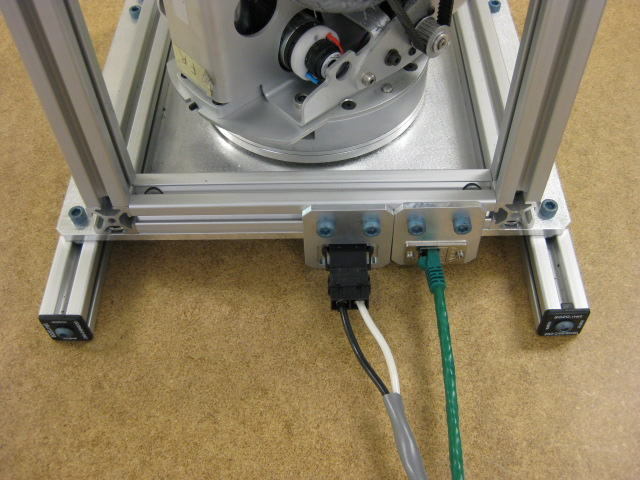

All casters must be successfully qualified using the "Caster Test", then go through the 48 hour burn in. If this caster has not been qualified or burned in, go back and use the "Caster Test" to qualify it.
Install the caster in the test fixture, and secure the power/etherCAT from the test fixture into the caster. Use four bolts to attach the caster.
Connect the caster to the test cart's power cable using the attached female power cable. Connect the EtherCAT to the test cart connection using the M-to-M RJ-45 adapter.
Press 'Continue' to start qualification.